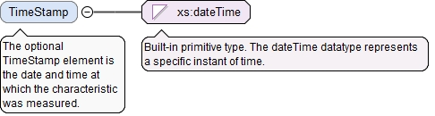
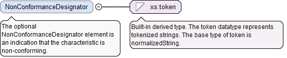

<xs:element name="Status" type="CharacteristicStatusType"><xs:annotation><xs:documentation>The Status element is the tolerance condition: pass (in tolerance), fail (out of tolerance), etc.</xs:documentation></xs:annotation></xs:element>
The optional xId attribute is a reference to the id of a QIF object in an external document. A QIF object in an external QIF document can be referenced by using references to two QIF ids: the id of the external document reference of type ExternalQIFDocumentReferenceType found in the local document and the id of the object found in the external document.
Source
<xs:element name="CharacteristicItemId" type="QIFReferenceType"><xs:annotation><xs:documentation>The CharacteristicItemId element is the QIF id of the associated characteristic item.</xs:documentation></xs:annotation></xs:element>
The optional TimeStamp element is the date and time at which the characteristic was measured.
Diagram

Type
xs:dateTime
Properties
content
simple
minOccurs
0
Source
<xs:element name="TimeStamp" type="xs:dateTime" minOccurs="0"><xs:annotation><xs:documentation>The optional TimeStamp element is the date and time at which the characteristic was measured.</xs:documentation></xs:annotation></xs:element>
The required n attribute is the number of Id elements in this array.
Source
<xs:element name="FeatureMeasurementIds" type="ArrayReferenceType" minOccurs="0"><xs:annotation><xs:documentation>The optional FeatureMeasurementIds element is a list of QIF ids of the feature measurements to which this characteristic applies.</xs:documentation></xs:annotation></xs:element>
The optional SubstituteFeatureAlgorithm element is the actual substitute feature data fitting algorithm used for the feature or features. This setting may differ from the substitute feature algorithm defined on the feature nominal, feature item, characteristic nominal or characteristic item.
<xs:element name="SubstituteFeatureAlgorithm" type="SubstituteFeatureAlgorithmType" minOccurs="0"><xs:annotation><xs:documentation>The optional SubstituteFeatureAlgorithm element is the actual substitute feature data fitting algorithm used for the feature or features. This setting may differ from the substitute feature algorithm defined on the feature nominal, feature item, characteristic nominal or characteristic item.</xs:documentation></xs:annotation></xs:element>
The optional xId attribute is a reference to the id of a QIF object in an external document. A QIF object in an external QIF document can be referenced by using references to two QIF ids: the id of the external document reference of type ExternalQIFDocumentReferenceType found in the local document and the id of the object found in the external document.
Source
<xs:element name="ActualComponentId" type="QIFReferenceType" minOccurs="0"><xs:annotation><xs:documentation>The optional ActualComponentId element is the QIF id of the actual component to which this characteristic applies.</xs:documentation></xs:annotation></xs:element>
The required n attribute is the number of Id elements in this array.
Source
<xs:element name="MeasurementDeviceIds" type="ArrayReferenceType" minOccurs="0"><xs:annotation><xs:documentation>The optional MeasurementDeviceIds element is a list of references to the measurement devices used in the inspection of the characteristic.</xs:documentation></xs:annotation></xs:element>
The optional xId attribute is a reference to the id of a QIF object in an external document. A QIF object in an external QIF document can be referenced by using references to two QIF ids: the id of the external document reference of type ExternalQIFDocumentReferenceType found in the local document and the id of the object found in the external document.
Source
<xs:element name="ManufacturingProcessId" type="QIFReferenceType" minOccurs="0"><xs:annotation><xs:documentation>The optional ManufacturingProcessId element is a reference to the traceability information for process used to manufacture this characteristic.</xs:documentation></xs:annotation></xs:element>
The required n attribute is the number of Id elements in this array.
Source
<xs:element name="NotedEventIds" type="ArrayReferenceType" minOccurs="0"><xs:annotation><xs:documentation>The optional NotedEventIds element is a list of QIF ids of noted events that happened during the measurement of this characteristic.</xs:documentation></xs:annotation></xs:element>
The optional NonConformanceDesignator element is an indication that the characteristic is non-conforming.
Diagram

Type
xs:token
Properties
content
simple
minOccurs
0
Source
<xs:element name="NonConformanceDesignator" type="xs:token" minOccurs="0"><xs:annotation><xs:documentation>The optional NonConformanceDesignator element is an indication that the characteristic is non-conforming.</xs:documentation></xs:annotation></xs:element>
The CharacteristicMeasurementBaseType is the abstract base type that defines the results of a measured characteristic evaluation holding measured/analyzed values.
The id attribute is the QIF id of the characteristic, used for referencing.
Source
<xs:complexType name="CharacteristicMeasurementBaseType" abstract="true"><xs:annotation><xs:documentation>The CharacteristicMeasurementBaseType is the abstract base type that defines the results of a measured characteristic evaluation holding measured/analyzed values.</xs:documentation></xs:annotation><xs:complexContent><xs:extension base="CharacteristicBaseType"><xs:sequence><xs:element name="Status" type="CharacteristicStatusType"><xs:annotation><xs:documentation>The Status element is the tolerance condition: pass (in tolerance), fail (out of tolerance), etc.</xs:documentation></xs:annotation></xs:element><xs:element name="CharacteristicItemId" type="QIFReferenceType"><xs:annotation><xs:documentation>The CharacteristicItemId element is the QIF id of the associated characteristic item.</xs:documentation></xs:annotation></xs:element><xs:element name="TimeStamp" type="xs:dateTime" minOccurs="0"><xs:annotation><xs:documentation>The optional TimeStamp element is the date and time at which the characteristic was measured.</xs:documentation></xs:annotation></xs:element><xs:element name="FeatureMeasurementIds" type="ArrayReferenceType" minOccurs="0"><xs:annotation><xs:documentation>The optional FeatureMeasurementIds element is a list of QIF ids of the feature measurements to which this characteristic applies.</xs:documentation></xs:annotation></xs:element><xs:element name="SubstituteFeatureAlgorithm" type="SubstituteFeatureAlgorithmType" minOccurs="0"><xs:annotation><xs:documentation>The optional SubstituteFeatureAlgorithm element is the actual substitute feature data fitting algorithm used for the feature or features. This setting may differ from the substitute feature algorithm defined on the feature nominal, feature item, characteristic nominal or characteristic item.</xs:documentation></xs:annotation></xs:element><xs:element name="ActualComponentId" type="QIFReferenceType" minOccurs="0"><xs:annotation><xs:documentation>The optional ActualComponentId element is the QIF id of the actual component to which this characteristic applies.</xs:documentation></xs:annotation></xs:element><xs:element name="MeasurementDeviceIds" type="ArrayReferenceType" minOccurs="0"><xs:annotation><xs:documentation>The optional MeasurementDeviceIds element is a list of references to the measurement devices used in the inspection of the characteristic.</xs:documentation></xs:annotation></xs:element><xs:element name="ManufacturingProcessId" type="QIFReferenceType" minOccurs="0"><xs:annotation><xs:documentation>The optional ManufacturingProcessId element is a reference to the traceability information for process used to manufacture this characteristic.</xs:documentation></xs:annotation></xs:element><xs:element name="NotedEventIds" type="ArrayReferenceType" minOccurs="0"><xs:annotation><xs:documentation>The optional NotedEventIds element is a list of QIF ids of noted events that happened during the measurement of this characteristic.</xs:documentation></xs:annotation></xs:element><xs:element name="NonConformanceDesignator" type="xs:token" minOccurs="0"><xs:annotation><xs:documentation>The optional NonConformanceDesignator element is an indication that the characteristic is non-conforming.</xs:documentation></xs:annotation></xs:element></xs:sequence></xs:extension></xs:complexContent></xs:complexType>